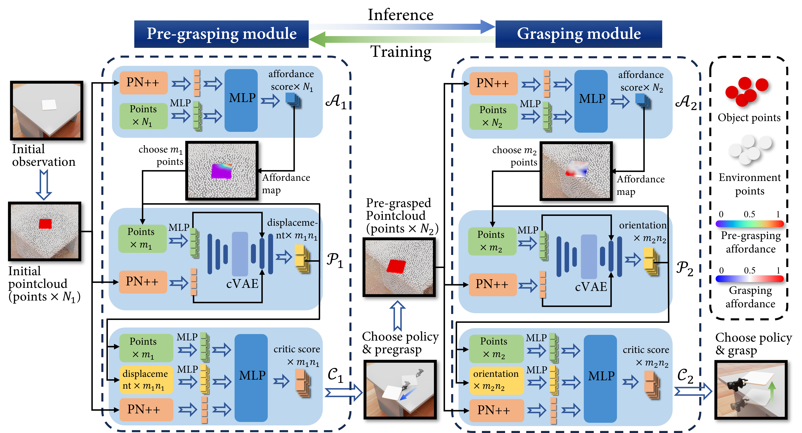

Introduction & Method

Illustration of PreAfford, demonstrating the application of a relay training paradigm where two synergistic modules cooperate to facilitate the manipulation of objects typically considered ungraspable. The pre-grasping module assesses environmental features such as edges, slopes, slots, and walls to propose strategic pre-grasping actions that enhance the likelihood of a successful grasp. Simultaneously, the grasping module evaluates these actions and provides feedback in the form of rewards, which are used to refine and optimize the pre-grasping strategies. Two color bars represent the pre-grasping and grasping phases, respectively, with the color intensity reflecting the calculated affordance values; higher values denote more optimal interaction conditions.

The framework of PreAfford. The framework consists of two main modules, each incorporating three networks: an affordance network, a proposal network, and a critic network. These networks respectively handle tasks of choosing the contact point, generating a proposal, and evaluating the proposal. PointNet++ (PN++) and MLP are employed to process point clouds and facilitate decision-making. During the inference phase, both modules collaborate to develop strategies for pre-grasping and grasping. In contrast, during the training phase, the grasping module generates rewards that are used to train the pre-grasping module, a process we refer to as relay.